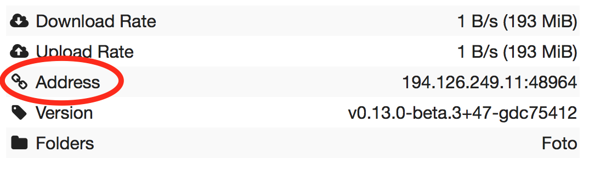

常見問題
一般
什麼是 Syncthing？
Syncthing is an application that lets you synchronize your files across multiple devices. This means the creation, modification or deletion of files on one machine will automatically be replicated to your other devices. We believe your data is your data alone and you deserve to choose where it is stored. Therefore Syncthing does not upload your data to the cloud but exchanges your data across your machines as soon as they are online at the same time.
到底是「syncthing」、「Syncthing」還是「SyncThing」？
It's Syncthing, although the command and source repository is spelled
syncthing so it may be referred to in that way as well. It's definitely not
SyncThing, even though the abbreviation st is used in some
circumstances and file names.
How does Syncthing differ from BitTorrent Sync?
The two are different and not related. Syncthing and BitTorrent Sync accomplish some of the same things, namely syncing files between two or more computers.
BitTorrent Sync by BitTorrent, Inc is a proprietary peer-to-peer file synchronization tool available for Windows, Mac, Linux, Android, iOS, Windows Phone, Amazon Kindle Fire and BSD. [1] Syncthing is an open source file synchronization tool.
Syncthing uses an open and documented protocol, and likewise the security mechanisms in use are well defined and visible in the source code. BitTorrent Sync uses an undocumented, closed protocol with unknown security properties.
使用方式
哪些內容會被同步？
以下項目會*一定*被同步：
File Contents
File Modification Times
以下項目是否同步則視情況而定：
File Permissions (When supported by file system. On Windows, only the read only bit is synchronized.)
Symbolic Links (When supported by the OS. On Windows Vista and up, requires administrator privileges. Links are synced as is and are not followed.)
The following is not synchronized;
File or Directory Owners and Groups (not preserved)
Directory Modification Times (not preserved)
Hard Links (followed, not preserved)
Extended Attributes, Resource Forks (not preserved)
Windows, POSIX or NFS ACLs (not preserved)
Devices, FIFOs, and Other Specials (ignored)
Sparse file sparseness (will become unsparse)
同步速度快嗎？
Syncthing segments files into pieces, called blocks, to transfer data from one device to another. Therefore, multiple devices can share the synchronization load, in a similar way as the torrent protocol. The more devices you have online (and synchronized), the faster an additional device will receive the data because small blocks will be fetched from all devices in parallel.
Syncthing handles renaming files and updating their metadata in an efficient manner. This means that renaming a large file will not cause a retransmission of that file. Additionally, appending data to existing large files should be handled efficiently as well.
Temporary files are used to store partial data downloaded from other devices. They are automatically removed whenever a file transfer has been completed or after the configured amount of time which is set in the configuration file (24 hours by default).
為什麼同步這麼慢？
When troubleshooting a slow sync, there are a number of things to check.
First of all, verify that you are not connected via a relay. In the "Remote Devices" list on the right side of the GUI, double check that you see "Address: <some address>" and not "Relay: <some address>".

If you are connected via a relay, this is because a direct connection could not be established. Double check and follow the suggestions in 防火牆設定 to enable direct connections.
Second, if one of the devices is a very low powered machine (a Raspberry Pi, or a phone, or a NAS, or similar) you are likely constrained by the CPU on that device. See the next question for reasons Syncthing likes a faster CPU. You can verify this by looking at the CPU utilization in the GUI. If it is constantly at or close to 100%, you are limited by the CPU speed. In some cases a lower CPU usage number can also indicate being limited by the CPU - for example constant 25% usage on a four core CPU likely means that Syncthing is doing something that is not parallellizable and thus limited to a single CPU core.
Third, verify that the network connection is OK. Tools such as iperf or just an Internet speed test can be used to verify the performance here.
為什麼會使用這麼多 CPU？
When new or changed files are detected, or Syncthing starts for the first time, your files are hashed using SHA-256.
Data that is sent over the network is (optionally) compressed and encrypted using AES-128. When receiving data, it must be decrypted.
There is a certain amount of housekeeping that must be done to track the current and available versions of each file in the index database.
By default Syncthing uses periodic scanning every 60 seconds to detect file changes. This means checking every file's modification time and comparing it to the database. This can cause spikes of CPU usage for large folders.
Hashing, compression and encryption cost CPU time. Also, using the GUI causes a certain amount of extra CPU usage to calculate the summary data it presents. Note however that once things are in sync CPU usage should be negligible.
To limit the amount of CPU used when syncing and scanning, set the
environment variable GOMAXPROCS to the maximum number of CPU cores
Syncthing should use at any given moment. For example, GOMAXPROCS=2 on a
machine with four cores will limit Syncthing to no more than half the
system's CPU power.
To reduce CPU spikes from scanning activity, use a filesystem notifications plugin. This is delivered by default via Synctrayzor, Syncthing-GTK and on Android. For other setups, consider using syncthing-inotify.
我應該把裝置 ID 保密嗎？
No. The IDs are not sensitive. Given a device ID it's possible to find the IP address for that node, if global discovery is enabled on it. Knowing the device ID doesn't help you actually establish a connection to that node or get a list of files, etc.
For a connection to be established, both nodes need to know about the other's device ID. It's not possible (in practice) to forge a device ID. (To forge a device ID you need to create a TLS certificate with that specific SHA-256 hash. If you can do that, you can spoof any TLS certificate. The world is your oyster!)
請參閱
如果發生衝突怎麼辦？
Syncthing does recognize conflicts. When a file has been modified on two devices
simultaneously, one of the files will be renamed to <filename>.sync-
conflict-<date>-<time>.<ext>. The device which has the larger value of the
first 63 bits for his device ID will have his file marked as the conflicting
file. Note that we only create sync-conflict files when the actual content
differs.
Beware that the <filename>.sync-conflict-<date>-<time>.<ext> files are
treated as normal files after they are created, so they are propagated between
devices. We do this because the conflict is detected and resolved on one device,
creating the sync-conflict file, but it's just as much of a conflict
everywhere else and we don't know which of the conflicting files is the "best"
from the user point of view. Moreover, if there's something that automatically
causes a conflict on change you'll end up with sync-conflict-...sync-conflict
-...-sync-conflict files.
How to configure multiple users on a single machine?
Each user should run their own Syncthing instance. Be aware that you might need to configure listening ports such that they do not overlap (see Syncthing 組態).
Syncthing 支援同一系統內資料夾間同步嗎？
No. Syncthing is not designed to sync locally and the overhead involved in doing so using Syncthing's method would be wasteful. There are better programs to achieve this such as rsync or Unison.
Syncthing 是我理想的備份應用程式嗎？
No. Syncthing is not a great backup application because all changes to your files (modifications, deletions, etc) will be propagated to all your devices. You can enable versioning, but we encourage the use of other tools to keep your data safe from your (or our) mistakes.
Why is there no iOS client?
There is an alternative implementation of Syncthing (using the same network
protocol) called fsync(). There are no plans by the current Syncthing
team to support iOS in the foreseeable future, as the code required to do so
would be quite different from what Syncthing is today.
如何排除檔名中含括號（[]）的檔案？
The patterns in .stignore are glob patterns, where brackets are used to
denote character ranges. That is, the pattern q[abc]x will match the
files qax, qbx and qcx.
To match an actual file called q[abc]x the pattern needs to "escape"
the brackets, like so: q\[abc\]x.
On Windows, escaping special characters is not supported as the \
character is used as a path separator. On the other hand, special characters
such as [ and ? are not allowed in file names on Windows.
Why is the setup more complicated than BTSync?
Security over convenience. In Syncthing you have to setup both sides to connect two nodes. An attacker can't do much with a stolen node ID, because you have to add the node on the other side too. You have better control where your files are transferred.
這是我們長期持續改善的方向。
如何從另一台電腦存取 Web GUI？
The default listening address is 127.0.0.1:8384, so you can only access the
GUI from the same machine. This is for security reasons. Change the GUI
listen address through the web UI from 127.0.0.1:8384 to
0.0.0.0:8384 or change the config.xml:
<gui enabled="true" tls="false">
<address>127.0.0.1:8384</address>
到
<gui enabled="true" tls="false">
<address>0.0.0.0:8384</address>
Then the GUI is accessible from everywhere. You should set a password and enable HTTPS with this configuration. You can do this from inside the GUI.
If both your computers are Unixy (Linux, Mac, etc) You can also leave the GUI settings at default and use an ssh port forward to access it. For example,
$ ssh -L 9090:127.0.0.1:8384 user@othercomputer.example.com
will log you into othercomputer.example.com, and present the remote Syncthing GUI on http://localhost:9090 on your local computer.
為什麼我在工作管理員看到兩個 Syncthing？
One process manages the other, to capture logs and manage restarts. This makes it easier to handle upgrades from within Syncthing itself, and also ensures that we get a nice log file to help us narrow down the cause for crashes and other bugs.
Where do Syncthing logs go to?
Syncthing logs to stdout by default. On Windows Syncthing by default also
creates syncthing.log in Syncthing's home directory (run syncthing
-paths to see where that is). Command line option -logfile can be used
to specify a user-defined logfile.
我要如何升級 Syncthing？
If you use a package manager such as Debian's apt-get, you should upgrade using the package manager. If you use the binary packages linked from Syncthing.net, you can use Syncthing built in automatic upgrades.
If automatic upgrades is enabled (which is the default), Syncthing will upgrade itself automatically within 24 hours of a new release.
The upgrade button appears in the web GUI when a new version has been released. Pressing it will perform an upgrade.
To force an upgrade from the command line, run
syncthing -upgrade.
Note that your system should have CA certificates installed which allow a
secure connection to GitHub (e.g. FreeBSD requires sudo pkg install
ca_root_nss). If curl or wget works with normal HTTPS sites, then
so should Syncthing.
我在哪裡可以找到最新發行版？
We release new versions through GitHub. The latest release is always found on the release page. Unfortunately GitHub does not provide a single URL to automatically download the latest version. We suggest to use the GitHub API at https://api.github.com/repos/syncthing/syncthing/releases/latest and parsing the JSON response.